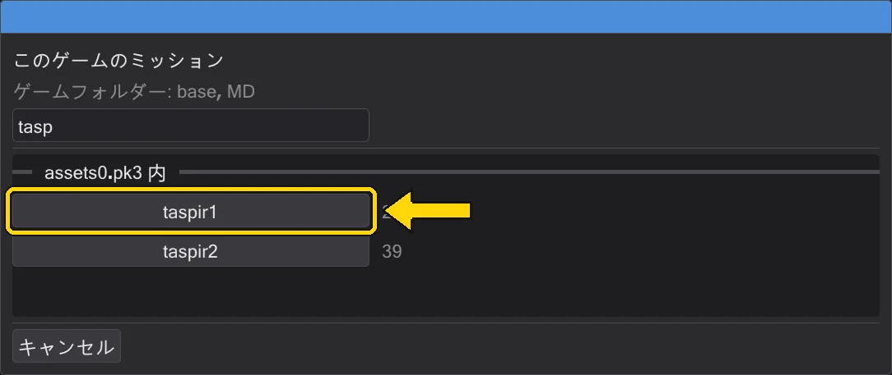

ミッション
ミッションとは、マップとそのエンティティ、すべてのスクリプトのまとまりです。まるごと開き、自分で作り、ゲームが読み込める .pk3 にまとめられます。
ミッションを開く#
ミッションを読み込む…(ファイル メニューまたはマップのツールバー)で .pk3 を選ぶと、その中のミッション(スクリプトのあるマップ)が一覧表示されます。選ぶとすべてが準備されます。マップ、ミッションのキャラクターを含む .ent、そしてミッションのすべてのスクリプトがそれぞれのタブで開き、最初のスクリプト(たいていイントロ)が前面になります。タブはすべてマップとカメラを共有します。

最近のミッション#
ファイル → 最近のミッション とスタート画面に、最近開いたミッション(アーカイブまたはミッションフォルダー)が表示されます。クリック 1 つでプロジェクト全体(マップ、エンティティ、すべてのスクリプト)が開き直されます。ファイルがなくなった項目は一覧から外れます。

新しいミッション#
新規ミッション で任意のマップにミッションを始めます。マップを選び、ミッション名(英数字と _。ゲームは maps/<名前>.bsp として読み込むので devmap <名前>)とスクリプトフォルダーを指定します。BehavEd-Remake はプレイヤースタート、スクリプトランナー、イントロスクリプト、ドキュメント\behaved\missions 内のミッションフォルダーを作ります。イントロはプレイヤーの出現時に実行されます。

一度もパックしていないミッションはフォルダーにあり、再起動後は ミッションフォルダーを開く で続けられます。
ミッションの保存#
ミッションを保存 はアーカイブに入るもの(各ファイルとサイズ)を表示し、先にミッションをチェックします。エンティティが使うのに存在しないスクリプト、コンパイルできないスクリプト、プレイヤースタートがない、存在しない対象を指すターゲット、ENDMARKER のない .str。エラー(赤)は直す必要があり、警告(オレンジ)は残してもかまいません。保存 はすべてのスクリプトを保存し、.ent を書き、スクリプトをコンパイルし、自作の ROFF ファイルを加え、.pk3 をゲームフォルダーに作ります。

zz_<名前>.pk3。古いファイルより優先されます)。ゲームを起動してコンソールに devmap <名前> と入力すると遊べます。